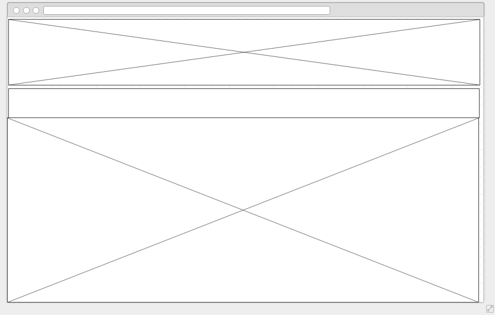

Site Plan
Purpose
San Quentin prison is a maximum security California state prison near San Rafael. Alcatraz Prison was a maximum-security federal prison, located on Alcatraz Island in San Francisco bay that closed in 1963. It has been decided that a triathlon between these two nefarious prisons would be a challenge for those who enjoy a challenge and attract history buffs as well. This particular race will be near Half Ironman, consisting of: a run of roughly 16 miles, a challenging swim of 3 miles and a scenic cycling course of 25 miles. The cost to enter is $100. The race will begin near San Quentin, run to Fisherman's wharf, swim to Alcatraz island and back and then bike around San Francisco bay, crossing the John T. Knox freeway and ending where the race began. This is a race between historic locales and unique in its scope.
Audience
The Audience for this site is athletes who want to compete in a triathlon. These people will consist of both men and women who are physically fit (This triathlon is very physically demanding). They will want a site that gives them all of the information about the race including cost, how to register, registration dates, a race map, and when the race is.
Pages and Content
- Home
- Home page for prison to prison triathlon
- San Quentin prison is a maximum security California state prison near San Rafael. Alcatraz Prison was a maximum-security federal prison, located on Alcatraz Island in San Francisco bay that closed in 1963. This particular race will be near Half Ironman, consisting of: a run of roughly 16 miles, a challenging swim of 3 miles and a scenic cycling course of 25 miles. The cost to enter is $100. The race will begin near San Quentin, run to Fisherman's wharf, swim to Alcatraz island and back and then bike around San Francisco bay, crossing the John T. Knox freeway and ending where the race began. This is a race between historic locales and unique in its scope.
- Links to social media
- News articles
- Home Page Image:

- Race
- Includes information about where and when the race is, packet pick up, how much the race costs, and how far the race is. It will include two photos of the bay area as well as a link to register and links to the run, bike and swim pages.
- Run
- This page will contain an image of a runner as well as a little basic information about the running portion of the race. It will include a link to register and a link to the biking and swimming pages.
- Bike
- This page will contain an image of a biker as well as a little basic information about the biking portion of the race. It will include a link to register and a link to the running and swimming pages.
- Swim
- This page will contain an image of a swimmer as well as a little basic information about the swimming portion of the race. It will include a link to register and a link to the running and biking pages.
- Registration Page
- Includes information about the race including information about packet pick up, where the race is, and how much it costs.
- Same form as a contact page. Asks for name, email address, favorite color, birth year, and gender.
- includes disclaimer
- Thank You for Registering Page
- Only available when registration form is submitted
- Thank you so much for registering for the 2016 Prison to Prison Race! **DISCLAIMER THIS IS A FICTIONAL WEBSITE**
- Volunteer Page
- Same form as a contact page. Asks for name, email address, favorite color, birth year, and gender.
- includes disclaimer
- Thank You for Volunteering Page
- Only available when volunteer form is submitted
- Thank you so much for volunteering for the 2016 Prison to Prison Race! **DISCLAIMER THIS IS A FICTIONAL WEBSITE**
Style Guide
Colors and Font
Font: Tahoma (sans-serif), Impact for H1.
Responsiveness
